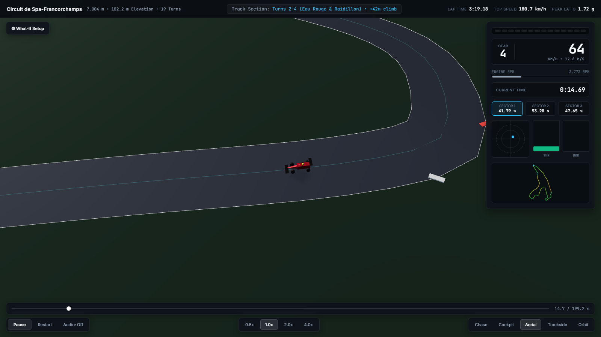
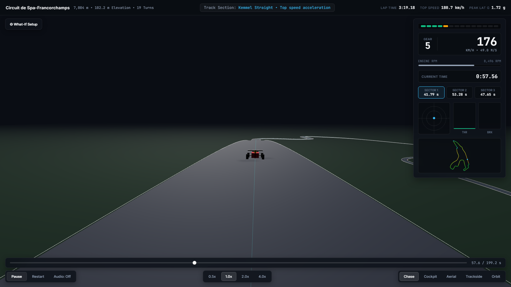
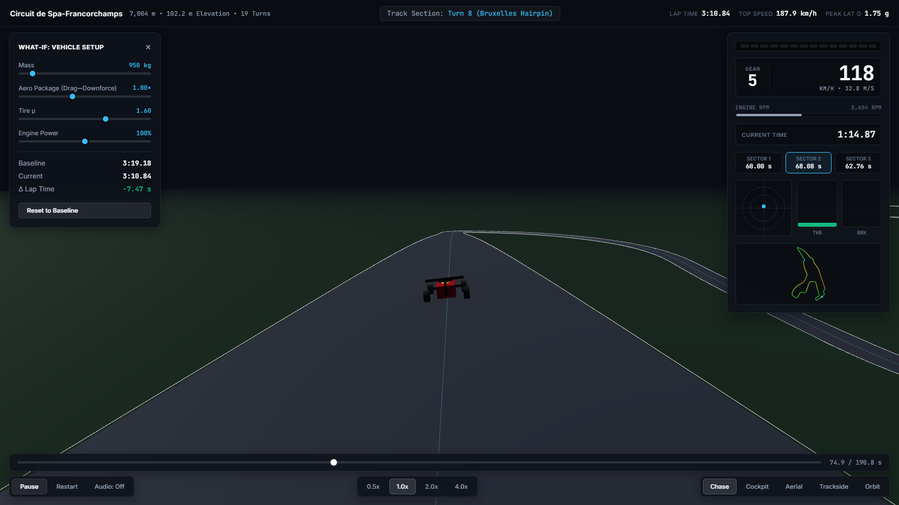

EAU ROUGE & RAIDILLON • +42m elevation change • real TU Munich GPS centerline data
Cornering Speed Limit
vcorner =
√
μg
κ − Kaero
Max cornering speed balances tire grip (μg) against track curvature (κ), reduced by aero downforce grip gain (Kaero). A friction-circle solver then runs a forward/backward two-pass integration to combine this with engine power and braking limits into a full speed profile.

Kemmel Straight • cinematic HUD replay

Live What-If sliders • browser-side physics, no MATLAB needed
Physics Engine
- Friction-circle traction model combining lateral grip and longitudinal accel/brake force
- Two-pass kinematic solver (forward acceleration + backward braking) iterated to convergence
- Pacejka '94 Magic Formula nonlinear tire model with load-sensitive grip, alongside a classic linear Coulomb fallback
- Aero downforce/drag, gearbox torque-curve powertrain, real track curvature from GPS centerline data
Stack & Delivery
- MATLAB source-of-truth solver, test suite, and native 3D animation (App Designer)
- Three.js / WebGL cinematic browser replay with F1-style HUD, shift lights, live minimap
- Physics engine ported to vanilla JS so the What-If panel re-solves the lap client-side in ~10ms — no MATLAB license required to try it
- Open track data: TU Munich racetrack database (Spa-Francorchamps, CC BY 4.0)